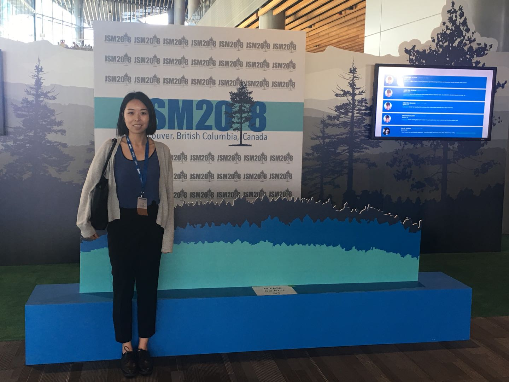

Statistical approach for investigating change in mutational processes during cancer growth and development
Abstract
Somatic mutations found in human cancer originate from an assortment of mutational processes. Each process leaves a unique mutational signature and the sum of all mutations constitutes the tumor mutation burden. We develop the statistical machinery to infer the latent mutation signatures and compare the burden (fraction of mutational signatures) attributed to each signature across different sample categories, say, for example, time, cancer subtype, ethnicity, etc. We propose a hierarchical model for estimating and testing if the mean burdens of the signatures differ between two groups of samples. We applied our methods to cancer trunk and branch mutations, i.e., mutations believed to occur prior to and after tumor initiation, in 16 colon tumors. Trunk and branch mutations were identified by whole exome sequencing of multi-regional tumor samples. Using our approach, we can simultaneously estimate burdens and infer changes in the mean burdens of mutational processes between early and late stage of tumor growth, accounting for the uncertainty of estimated burdens.
